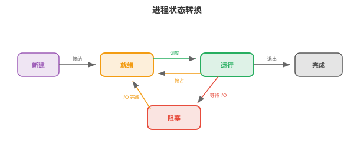
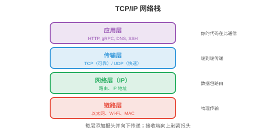
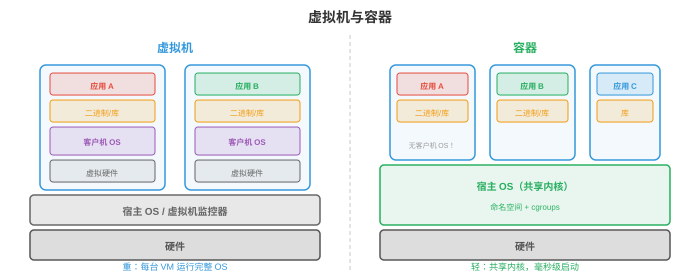

操作系统¶
操作系统是硬件与应用程序之间的软件层，负责管理资源、提供抽象并强制隔离。本节涵盖操作系统的职责、进程、线程、CPU 调度、内存管理、文件系统和系统调用。
- 没有操作系统的计算机，就像没有厨师的厨房：食材，硬件，虽然都在，却没有人协调谁用炉子、餐具放在哪里，以及如何避免两个人同时抢同一把刀。操作系统（OS）就是这个协调者。
大白话
操作系统就是硬件和各种程序之间的总管，负责分配资源、提供统一用法并防止程序互相捣乱。
- 对机器学习从业者而言，操作系统概念解释了：为何
nvidia-smi会按进程显示 GPU 内存使用量、为何训练会因“out of memory”崩溃、为何fork()会复制 Python 进程，以及为何 Docker 容器能提供隔离环境。
大白话
你在训练时遇到的显存占用、内存溢出、进程复制和容器隔离，背后都不是魔法，而是操作系统在管理资源。
操作系统的职责¶
-
操作系统有三项核心职责：
-
抽象（abstraction）：以整洁接口隐藏硬件复杂性。程序读写“文件”时不必知道底层存储是 SSD、HDD 还是网络驱动器；它们分配“内存”时不必管理物理 RAM 芯片；它们运行在“CPU”上时不必担心中断和缓存一致性。
大白话
抽象就是把复杂硬件包装成简单接口，让程序只说“读文件”或“申请内存”，不用操心底层细节。
-
资源管理（resource management）：多个程序共享 CPU、内存、磁盘和网络。操作系统决定谁在何时获得什么资源、获得多久。公平高效的分配策略使系统保持响应。
大白话
资源管理像排班：多个程序都想用 CPU、内存和磁盘，系统要安排先后和配额。
-
隔离与保护（isolation and protection）：程序不能彼此干扰。浏览器中的 bug 不应使内核崩溃；恶意程序不应读取其他程序的密码。操作系统借助硬件支持，特权级和虚拟内存，强制实施边界。
大白话
隔离就是给程序划房间和门锁，一个程序出问题时不能随便闯进别人的房间。
-
进程¶
- 进程（process）是正在运行的程序，是操作系统的基本工作单元。每个进程拥有：
大白话
程序是放在磁盘上的说明书，进程是这份说明书被真正启动后的“工作现场”。
-
代码（code），只读的程序指令。
大白话
代码部分是进程要执行的指令，通常只读，避免运行时被随意改写。
-
数据（data），全局变量和堆分配。
大白话
数据区放程序需要长期保存的全局数据和动态申请的对象。
-
栈（stack），函数调用帧和局部变量。
大白话
栈记录函数调用的临时现场，函数返回后对应的那一层就可以收起来。
-
状态（state），寄存器值、程序计数器、打开的文件等。
大白话
状态就是“程序现在进行到哪、手里拿着什么”的快照，切换回来时要靠它恢复。
- 进程控制块（Process Control Block, PCB）是操作系统用于跟踪进程的数据结构。它存储进程 ID，PID、状态、程序计数器、寄存器内容、内存映射、打开的文件描述符和调度优先级。操作系统从一个进程切换到另一个进程时，将当前进程状态保存到其 PCB，并加载下一个进程状态。这是一次上下文切换（context switch）。
大白话
PCB 是操作系统为每个进程保存的档案；上下文切换就是先把当前档案存好，再拿出另一个进程的档案继续工作。
- 上下文切换代价高：保存和恢复寄存器、清空缓存、使 TLB 条目失效均需微秒量级。在运行数千个进程的系统中，开销可能显著。这正是每请求一个进程的服务器架构，例如旧版 Apache，被基于线程或事件驱动的架构取代的原因。
大白话
切换不是免费的，频繁保存和恢复现场会浪费时间；所以高并发服务器通常复用线程或使用事件循环。
-
Unix 通过
fork()和exec()创建进程：-
fork()创建当前进程的副本（copy）。子进程获得父进程内存、文件描述符和状态的副本。两个进程都从同一位置继续执行，但子进程中fork()返回 0，父进程中返回子进程 PID。大白话
fork()像把当前工作现场复制一份，父子进程随后各自继续走自己的路。 -
exec()用新程序替换当前进程的代码。调用fork()后，子进程通常调用exec()运行另一个程序。大白话
exec()不创建新进程，而是把当前进程“换成”另一个程序来执行。 -
这种先 fork 再 exec 的模型很优雅：创建新进程，fork，和加载新程序，exec，是可独立定制的两个操作。在 fork 与 exec 之间，子进程可以重定向 I/O、修改环境变量或放弃特权。
大白话
两步拆开后，子进程可以先改好输入输出和权限，再正式装载新程序。
-

- 进程状态（process states）：进程处于以下状态之一：
- 运行（Running）：当前正在某个 CPU 核心上执行。
- 就绪（Ready）：等待 CPU 核心，可运行但尚未被调度。
- 阻塞（Blocked），等待：在某个事件发生前无法继续，I/O 完成、获得锁或定时器到期。
- 终止（Terminated）：已完成执行，等待父进程收集退出状态。
大白话
进程会在“正在跑、排队等 CPU、因事件暂停、已经结束”几种状态之间流转。
线程¶
- 线程（thread）是进程内轻量的执行单元。一个进程中的所有线程共享相同的代码、数据和堆，但各自拥有自己的栈和寄存器状态。
大白话
线程像同一个办公室里的多个工作人员：共享文件柜，但每个人有自己的工作台和当前任务。
- 相对多个进程的优势是：线程共享内存，因此通信很快，只需读写共享变量。进程则需要进程间通信，管道、套接字、共享内存映射，速度更慢且更复杂。
大白话
线程沟通只需看同一块内存；进程彼此隔离，沟通要走专门的“传话渠道”。
- 缺点是共享内存很危险。两个线程同时写同一变量会造成竞争条件（race condition），结果取决于哪个线程先运行。这引出了第 4 节讨论的同步问题。
大白话
共享得快也容易撞车：两个线程同时改同一个值，最后结果可能取决于谁恰好先执行。
- 内核线程（kernel threads）由操作系统调度器管理。每个线程独立调度到 CPU 核心上。创建和切换内核线程涉及系统调用，开销与进程上下文切换相近，但较小。
大白话
内核线程被操作系统直接看见和安排，可以真正分到不同 CPU 核心，但创建和切换有系统开销。
- 用户线程（user threads），绿色线程，由用户空间的运行时库管理，对操作系统不可见。它们创建和切换更便宜，无需系统调用；但一个用户线程的阻塞操作会阻塞进程内全部线程，因为操作系统只看到一个内核线程。
大白话
用户线程由程序自己调度，轻便便宜；但底层只有一个内核线程时，其中一个阻塞可能拖住全部任务。
- 现代系统使用混合模型（hybrid models）：将许多用户线程映射到较少的内核线程上，M:N 线程模型。Go 的 goroutine 和 Erlang 的进程都是由语言运行时调度到 OS 线程上的用户级线程。
大白话
混合模型让大量轻量任务复用少量真正的 OS 线程，在成本和并行能力之间折中。
- 线程池（thread pools）预先创建固定数量的线程以等待任务。任务到来时分配给空闲线程。这避免了为每项任务创建和销毁线程的开销。Web 服务器、数据库引擎和机器学习推理服务器都使用线程池。
大白话
线程池像提前雇好一组员工，任务来了直接分配，避免每来一单都重新招人和解雇。
CPU 调度¶
- 调度器（scheduler）决定每时刻由哪个进程/线程在哪个 CPU 核心上运行。目标是最大化 CPU 利用率、最小化交互任务的响应时间、最大化批处理任务吞吐量，并确保公平。
大白话
调度器就是 CPU 的排班员，要同时兼顾“别闲着、响应快、总产出高、别偏心”。
- 先来先服务（First Come First Served, FCFS）：按到达顺序运行进程。它简单，却有护航效应（convoy effect）：一个长运行进程阻塞其后全部短进程。
大白话
FCFS 像排队买票，规则简单，但前面一个慢人会让后面所有快人一起等。
- 最短作业优先（Shortest Job First, SJF）：先运行最短的进程。它可证明地最小化平均等待时间，但需要预先知道作业时长，一般不可能。其抢占式版本最短剩余时间优先（Shortest Remaining Time First, SRTF）会在有更短作业到来时中断当前作业。
大白话
先做短任务通常能让平均等待最少，但现实中很难提前准确知道每个任务要跑多久。
- 时间片轮转（Round Robin, RR）：每个进程获得固定时间片（time quantum），例如 10 ms，随后被抢占并移到队列尾部。它公平且响应好，但时间片很关键：过小会造成大量上下文切换，过大则退化为 FCFS。
大白话
RR 给每个进程轮流用 CPU；时间片太短会忙于换人，太长又失去轮流的意义。
- 优先级调度（priority scheduling）：每个进程有优先级，高优先级进程先运行。危险是饥饿（starvation）：若高优先级进程持续到来，低优先级进程可能永远不运行。老化（aging）解决此问题：进程等待越久，其优先级越高。
大白话
优先级能让紧急任务先做，但低优先级任务不能永远没机会，所以等待越久就应逐步加分。
- 多级反馈队列（Multilevel Feedback Queues, MLFQ）：包含多个具有不同优先级和时间片的队列。新进程从最高优先级队列，短时间片，开始；若进程用完整个时间片，CPU 密集型，则被降至低优先级队列，更长时间片。交互进程会在用完时间片前因 I/O 而阻塞，因此自然留在高优先级队列。它无需预先知道作业类型即可适应工作负载。
大白话
MLFQ 会观察任务表现：爱占 CPU 的任务逐渐降级，常等待 I/O 的交互任务保持优先。
- 完全公平调度器（Completely Fair Scheduler, CFS）是 Linux 调度器。它维护一棵按“虚拟运行时间”排序的红黑树，红黑树是平衡二叉搜索树，虚拟运行时间即进程已消耗的 CPU 时间。虚拟运行时间最小的进程下一个运行。这确保长期看每个进程都获得公平份额。CFS 每次调度决策为 \(O(\log n)\)。
大白话
CFS 总挑“实际得到 CPU 最少”的进程先运行，用虚拟时间把长期公平落到可执行的排序上。
内存管理¶
- 操作系统管理物理 RAM，将其分配给进程，并在不再需要时回收。
大白话
内存管理就是记录哪些 RAM 已分给谁、什么时候能回收，以及如何避免互相覆盖。
- 分页（paging），见第 2 节，将虚拟内存划分为固定大小的页，将物理内存划分为页框。页表把页映射到页框。因为所有页大小相同，分页消除了外部碎片，分配间被浪费的空间。
大白话
把内存切成统一大小的小格子，程序需要几格就分几格，较少出现“总空间够但找不到连续大块”的问题。
- 请求分页（demand paging）只在页面首次被访问时才将其加载至 RAM，而非进程启动时。这节省内存：一个有 1 GB 代码的程序在典型运行中可能只使用 50 MB，其余部分永远不会被加载。
大白话
页面用到才搬进 RAM，没用到的先留在磁盘，像按需取货而不是把整仓库一次搬进店里。
- RAM 已满又需要新页时，操作系统必须逐出（evict）已有页面。第 2 节的页面置换（page replacement）算法，LRU、FIFO、时钟算法，决定逐出哪一页。好的置换最小化缺页；糟糕的置换导致颠簸。
大白话
RAM 没位置时必须请走一页；请走常用页会马上再缺页，系统就会反复搬运而变慢。
- 分段（segmentation）把内存划分为变长段，代码、数据、栈、堆，每段有自己的基地址和长度。分段提供逻辑组织，分页提供物理管理。现代系统极少使用分段，主要用于保护，并依赖分页管理内存。
大白话
分段按“代码区、数据区、栈区”这种逻辑来分，分页则按固定小块管理真实内存；现代系统主要依赖分页。
- 堆（heap）保存动态分配的内存，C 中为
malloc/free，Java 中为new，Python 中为隐式分配。操作系统向进程提供大块内存，内存分配器（memory allocator），例如glibc malloc、jemalloc、tcmalloc，再将其细分为较小分配。分配器设计影响性能：碎片浪费空间，线程间竞争浪费时间。
大白话
堆像一块可随时切割的材料区；切得太碎会浪费空间，多线程同时来切还会互相排队。
文件系统¶
- 文件系统（file system）将持久化存储，SSD、HDD，上的数据组织为由名称构成层次结构的文件和目录。
大白话
文件系统把磁盘上的一堆数据整理成文件夹和文件，让人能按名字找到内容。
- inode，索引节点，存储文件元数据：大小、所有权、权限、时间戳和磁盘数据块指针。文件名保存在目录中，目录将名称映射到 inode 编号。这种分离意味着一个文件可有多个名称，称为硬链接（hard links），指向同一 inode。
大白话
inode 是文件的“档案卡”，记录文件属性和数据在哪；目录只负责把名字指到这张档案卡。
- FAT，文件分配表：用于 USB 驱动器和 SD 卡的简单文件系统。表将每个簇，块，映射到文件中的下一个簇，形成链表。它简单，但对权限、日志和大文件的支持较差。
大白话
FAT 用链表把一个文件的各个存储块串起来，简单通用，但功能和可靠性有限。
- ext4：默认 Linux 文件系统。它使用 inode 的直接、一级间接、二级间接和三级间接块指针来处理任意大小的文件。它支持区段（extents），连续的数据块范围，以高效处理大文件。最大文件大小为 16 TB，最大分区为 1 EB。
大白话
ext4 用多级指针找到小文件和大文件的数据，并用连续区段减少大文件的管理开销。
- 日志（journaling）防止崩溃导致损坏。修改文件系统结构前，先将变更写入日志（journal）。若系统在操作中崩溃，重启时会重放日志，以完成或撤销该操作。没有日志时，写入中崩溃可能留下不一致的文件系统，例如文件数据块已更新但 inode 未更新，或反过来。
大白话
日志像先写操作清单再动账本；突然断电后，系统能按清单补完或回滚，避免目录和数据对不上。
- 基于 B 树的文件系统（B-tree based file systems），Btrfs、ZFS，使用 B 树，平衡搜索树，组织数据与元数据，从而支持高效搜索、写时复制快照和用于数据完整性的内置校验和。这与数据库索引使用的是同一种 B 树。
大白话
Btrfs 和 ZFS 用平衡树管理文件，查找快，还能通过写时复制做快照和校验数据是否损坏。
系统调用与内核模式¶
- 系统调用（system call）是用户程序与操作系统内核之间的接口。程序需要完成特权操作，读取文件、分配内存、创建进程、发送网络数据包，时会发起系统调用。
大白话
系统调用是程序向内核申请“高权限服务”的正式窗口，普通程序不能直接碰硬件。
-
CPU 在两种模式下运行：
-
用户模式（User mode）：受限。程序可执行自己的代码并访问自己的内存，但不能直接访问硬件、其他进程的内存或操作系统数据结构。
大白话
用户模式像普通访客，只能在自己的区域活动，不能直接改机器的核心设施。 - 内核模式（Kernel mode）：不受限。操作系统内核可访问全部硬件和内存。系统调用是从用户模式进入内核模式的受控入口。
大白话
内核模式拥有总钥匙，所以进入必须经过系统调用这样的受控入口。
-
-
程序调用
read()时，会发生以下过程：- 程序将参数放入寄存器并触发陷阱（trap），软件中断。
- CPU 切换到内核模式，并跳转至系统调用处理程序。
- 内核验证参数、执行 I/O 操作，并将数据复制到用户缓冲区。
- 内核切回用户模式并返回结果。
大白话
read() 看似普通函数，实际上会暂时把控制权交给内核，由内核检查权限并完成真正的设备读取。
- 常见系统调用：
open、read、write、close，文件；fork、exec、wait、exit，进程；mmap、brk，内存；socket、bind、listen、accept，网络。
大白话
这些调用覆盖了程序最常做的几类系统级事情：文件、进程、内存和网络。
- 中断（interrupts）是迫使 CPU 暂停当前工作并运行中断处理程序，位于内核中，的硬件信号。按下键盘键、网络数据包到达或定时器滴答均会产生中断。定时器中断尤为重要：它使操作系统能抢占正在运行的进程并切换到另一进程，即抢占式多任务。
大白话
中断让设备能主动叫醒 CPU；定时器中断则让操作系统定期“换班”，避免一个程序霸占 CPU。
网络基础¶
- 网络栈是使机器间通信成为可能的操作系统子系统。理解它能够解释分布式训练如何同步梯度、模型服务如何处理请求，以及为何延迟很重要。
大白话
网络栈就是操作系统里负责发包、收包和把网络细节分层处理的一整套机制。

-
TCP/IP 模型（TCP/IP model）将网络组织为多层，每一层向其上层提供抽象：
-
链路层（Link layer）：处理单一物理链路上的通信，以太网、Wi-Fi，处理 MAC 地址和帧。
大白话
链路层只管“这一跳”怎么把帧送到相邻设备。 - 网络层（Network layer, IP）：将数据包从源地址跨多个网络路由至目的地。每台机器有一个IP 地址（IP address），如 IPv4 的 192.168.1.1，或 128 位 IPv6 地址。路由器根据目的 IP 逐跳转发数据包。
大白话
网络层像快递路线规划，依据 IP 地址让数据包一跳一跳找到远方机器。 - 传输层（Transport layer, TCP/UDP）：提供应用程序之间的端到端通信。
大白话
传输层负责把数据交给正确的应用，并决定要不要可靠、有序地送达。 - 应用层（Application layer）：应用程序直接使用的 HTTP、DNS、gRPC 等协议。
大白话
应用层是开发者直接使用的协议层，例如浏览网页、查域名和调用服务。
-
-
TCP，传输控制协议，提供可靠、有序的传递。它建立连接，三次握手：SYN、SYN-ACK、ACK，保证全部数据按序到达，使用序列号和确认，重传丢失的数据包，并控制发送速率以避免压垮网络，称为拥塞控制（congestion control）。代价是延迟：握手增加一次往返，重传增加延迟。
大白话
TCP 像带签收和补寄服务的快递，可靠但要握手、确认和重传，所以速度成本更高。
- UDP，用户数据报协议，提供不可靠、无序的传递。没有握手、重传和顺序保证，其延迟远低于 TCP。它用于速度比可靠性更重要的场景：视频流、在线游戏、DNS 查询。在机器学习中，一些梯度同步协议为降低延迟使用基于 UDP 的 RDMA。
大白话
UDP 像直接把包扔出去，不等签收也不负责补寄，换来更低延迟，适合能容忍少量丢包的场景。
- 套接字（sockets）是操作系统的网络通信 API。套接字（socket）是由 IP 地址和端口号标识的端点。服务器创建套接字，将其绑定到端口，例如 HTTP 使用 80，监听连接并接受连接。客户端创建套接字并连接到服务器的地址:端口。随后数据通过套接字读写，如同文件。
大白话
套接字就是程序的网络插座，用 IP 找机器、用端口找具体服务，连上后像读写文件一样交换数据。
- DNS，域名系统，将人类可读名称，google.com，转换为 IP 地址，142.250.80.46。它是分布式、分层数据库：机器询问本地解析器，解析器询问根服务器，根服务器为每个域委派权威服务器。
大白话
DNS 是互联网的电话簿，把好记的域名查成机器真正使用的 IP 地址。
- HTTP，超文本传输协议，是 Web 的请求-响应协议。客户端发送请求，方法 + URL + 报头 + 可选主体，服务器发送响应，状态码 + 报头 + 主体。机器学习模型服务，例如 TensorFlow Serving、Triton，将模型暴露为 HTTP 或 gRPC 端点。
大白话
HTTP 就是“客户端提问、服务器回答”的格式，模型服务也可以用它把预测接口暴露出来。
- 延迟与带宽（latency vs bandwidth）：延迟是一个数据包从源到目的地的时间，取决于物理距离和网络跳数；带宽是数据率，每秒可传输多少字节。高带宽高延迟连接，卫星互联网，可以传输大量数据，但每个字节到达都要很久。对分布式训练，延迟影响同步屏障，所有 GPU 必须等待最慢者，带宽影响大梯度张量传输，第 6 章。
大白话
延迟是“第一件货多久到”，带宽是“管道每秒能运多少货”；分布式训练两者都可能成为瓶颈。
虚拟化与容器¶
- 虚拟化（virtualisation）在一台物理机器上运行多个操作系统。虚拟机监控器（hypervisor），VMware、KVM、Xen，创建虚拟机（virtual machines, VMs），每台虚拟机均有自己的虚拟 CPU、内存、磁盘和网络接口。每台 VM 运行完整操作系统，客户机 OS，且认为自己拥有专用硬件。
大白话
虚拟机把一台真实电脑切成多台“假电脑”，每台都以为自己独占硬件并运行完整操作系统。
- VM 提供强隔离，一台 VM 崩溃不影响其他 VM，且很灵活，可在同一机器运行 Linux 与 Windows、在物理主机间迁移 VM。代价是开销：每台 VM 都运行完整 OS 内核，消耗内存和 CPU 来完成与宿主 OS 重复的 OS 操作。
大白话
VM 隔离好、迁移方便，但每台都带一整套 OS，像几户人家各自买齐厨房，资源开销较大。

-
容器（containers），Docker、Podman，提供更轻量的替代方案。容器不是虚拟化整个硬件，而是共享宿主 OS 内核，并借助内核特性隔离进程：
-
命名空间（Namespaces）隔离进程可见的内容：每个容器有自己的进程树视图，PID 命名空间、网络接口，网络命名空间、文件系统挂载点，挂载命名空间和主机名，UTS 命名空间。容器内的进程无法看到其他容器进程。
大白话
命名空间给容器一副“独立视野”，容器里的程序看不到主机和其他容器的进程、网络或挂载点。
-
Cgroups，控制组，限制进程可使用的资源：CPU 时间、内存、磁盘 I/O、网络带宽。容器不能消耗超过其 cgroup 允许的资源，从而避免一个容器使其他容器饥饿。
大白话
Cgroups 像给容器设配额，限制它最多能吃多少 CPU、内存和带宽，防止一户人家把资源全占光。
-
-
容器以毫秒级启动，无需引导 OS，开销极小，共享内核，并由Dockerfile定义，其中指定基础镜像、依赖与命令。因此容器具有可复现性：
docker build可在任何地方生成相同环境。
大白话
容器只打包应用和依赖、共享宿主内核，所以启动快；Dockerfile 则像菜谱，保证环境能重复做出来。
- 对机器学习，容器解决“在我的机器上能运行”的问题。具有指定版本 CUDA、cuDNN、PyTorch 和 Python 的训练环境被打包为容器镜像，任何人可在任意机器精确复现该环境。云训练平台，AWS SageMaker、GCP Vertex AI，在容器中运行训练作业。
大白话
把 CUDA、PyTorch 等版本一起封进镜像，换机器时仍按同一套依赖运行，减少“我这里能跑你那里不能跑”。
- Kubernetes，K8s，在大规模上编排容器：它将容器调度到机器集群，重启失败容器，根据负载扩缩容，并管理容器间网络。大规模机器学习服务，数千模型副本处理数百万请求，运行在 Kubernetes 上。
大白话
Kubernetes 是容器集群的总调度员，负责把容器放到合适机器上、挂掉就重启、忙了就加副本。
安全基础¶
-
操作系统通过多种机制实施安全：
-
权限（Permissions）：每个文件都有所有者、组和权限位，所有者、组和其他用户的读/写/执行。进程带着启动它的用户身份，UID，运行，且只能访问权限位允许的文件。root 用户，UID 0，绕过全部权限检查，因此以 root 运行很危险。
大白话
权限决定“谁能看、改、执行”某个文件；root 几乎不受限制，权限过大时一旦被攻破后果更严重。
- 特权分离（Privilege separation）：进程以完成任务所需的最小特权运行。Web 服务器不需要 root 访问；应以受限用户运行，该用户仅能读取 Web 文件并绑定端口 80。若服务器被攻破，攻击者的访问受限于该用户能做什么。
大白话
只给程序完成工作所需的最低权限，程序被攻破后，攻击者能做的事也被限制在较小范围内。
- 沙箱（Sandboxing）：在文件权限之外进一步限制进程可做的事。seccomp，Linux，限制进程可发起的系统调用；AppArmor 与 SELinux定义强制访问控制策略。容器组合命名空间、cgroups 和 seccomp，实现多层隔离。
大白话
沙箱是在权限之外再加几道围栏，限制程序能调用哪些内核功能、能访问哪些资源。
-
地址空间布局随机化（Address Space Layout Randomisation, ASLR）：每次程序运行时随机化栈、堆和库的内存位置。它使攻击者更难利用内存损坏 bug，缓冲区溢出，因为攻击者无法预测代码或数据所在内存位置。
-
安全是系统范围的关切：链条强度取决于最弱环节。模型服务系统需要安全网络通信，TLS/HTTPS、经身份验证的 API 访问，API 密钥、OAuth、输入验证，防止对抗输入，以及隔离执行，采用最小特权容器。
编程任务（使用 CoLab 或 Notebook）¶
-
探索进程创建。使用 Python 的
os.fork()，仅 Unix，创建子进程，并观察父进程和子进程均从同一位置继续执行。 -
模拟时间片轮转调度。给定一组具有运行时间的进程，模拟调度并计算平均等待时间。
def round_robin(processes, quantum=3): """Simulate round-robin scheduling. processes: list of (name, burst_time) tuples. """ queue = [(name, burst, 0) for name, burst in processes] # (name, remaining, wait) time = 0 log = [] while queue: name, remaining, waited = queue.pop(0) waited += (time - waited - (processes[[p[0] for p in processes].index(name)][1] - remaining)) run_time = min(quantum, remaining) log.append(f" t={time:3d}: {name} runs for {run_time} (remaining: {remaining - run_time})") time += run_time remaining -= run_time if remaining > 0: queue.append((name, remaining, time)) else: log.append(f" t={time:3d}: {name} DONE (turnaround: {time})") for line in log: print(line) print("Round Robin (quantum=3):") round_robin([("P1", 10), ("P2", 4), ("P3", 6)], quantum=3) -
使用 LRU 模拟页面置换。给定一串页面访问和固定数量页框，统计缺页次数。
def lru_page_replacement(pages, n_frames): """Simulate LRU page replacement.""" frames = [] faults = 0 for page in pages: if page in frames: frames.remove(page) frames.append(page) # move to most recently used status = "HIT " else: faults += 1 if len(frames) >= n_frames: evicted = frames.pop(0) # remove least recently used status = f"MISS (evict {evicted})" else: status = "MISS (cold)" frames.append(page) print(f" Page {page}: {status} frames={frames}") print(f"\nTotal faults: {faults}/{len(pages)} ({faults/len(pages):.0%})") print("LRU with 3 frames:") lru_page_replacement([1, 2, 3, 4, 1, 2, 5, 1, 2, 3, 4, 5], n_frames=3)